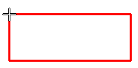

Align a table to a border or title block
You can position a table precisely by snapping its origin point to a keypoint located on geometry on the working sheet or the background sheet.
-
Select the following commands on the Sketching tab→IntelliSketch group:
-
Locate Background
 —Makes geometry on the background sheet available for selection from the working sheet.
—Makes geometry on the background sheet available for selection from the working sheet. -
Alignment Indicator
 —Displays horizontal and vertical alignment lines when you are locating geometry.
—Displays horizontal and vertical alignment lines when you are locating geometry.
-
-
Specify a table origin point:
-
Right-click the table you want to position and choose Properties.
-
In the Table Properties dialog box, click the Location tab.
-
From the Anchor corner list, select an origin point for the table (Top-Left, Top-Right, Bottom-Left, or Bottom-Right).
-
Click Apply.
-
-
On the working sheet, drag the table to locate the desired keypoint along the drawing border, title block, or any other geometry on the background sheet, and then click to place it.

-
Using a keypoint to position a table does not create an associative relationship between them.
-
If no background sheets are available in your template, see Attach a background sheet.

How do I
Edit a table cell directlyShow and edit property text in a table cell
Change the font size of table cells with direct edit
Separate and rejoin table pages
Extract model information into a model table using property text
Sort table contents
Copy table contents to the clipboard
Add a table title
Manipulate table rows and columns
Learn more
Editing a table directlyTable cell color and value editing
Arranging table pages